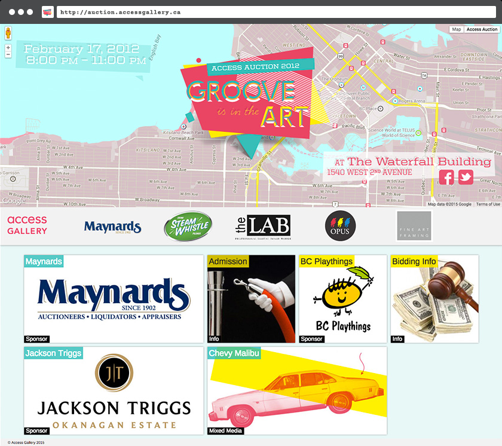
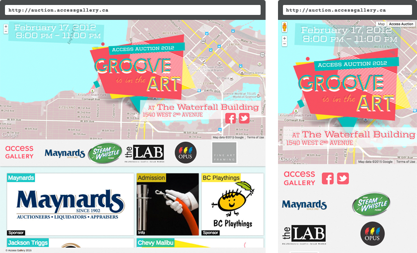

For artist-run centres the opportunity to properly fundraise comes rarely, perhaps only once or twice per year. That's why when fundraisers go down they need to go down with a bang, and Access Gallery's 2012 auction at the landmark Waterfall Building was no exception. The site needed to bring attention to the featured artists as well as let attendees know the event was being off-site, away from the gallery.
A custom Google Map directs visitors to the event's location and the graphics link up visually with the print collateral. All graphics by Christy Nyiri.
The site is responsive and accommodates various screen sizes without covering up API attribution. WordPress was a familiar platform for the gallery staff, who populated the content of the artists featured in the event.
It's important to 'do it up' right for fundraising season and a website is an important ingredient in the promotional mix. Throw in some complimentary printed material, and the outcome was one of the most successful auctions in Access Gallery's history.